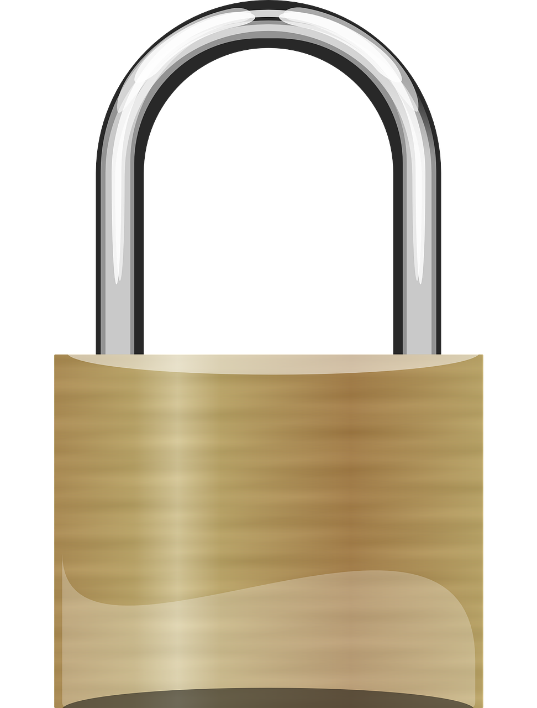

โดย มนตรี เกียรติเผ่าพันธ์
1. เข้ารหัส (Encryption)
แปลงข้อมูลเป็นรหัส คนอื่นอ่านไม่ได้ ถ้าไม่มีกุญแจ (decryption key) เพื่อถอดรหัสกลับเป็นข้อมูลต้นฉบับ เช่น วิธี Advanced Encryption Standrad (AES)
Fig. 1 Encryption
Source : Titanfile.com
Encryption (AES):
Encrypted data:
Copied!
Decryption:
Decrypted data:
2. สำรองข้อมูล (Backup)
จัดทำสำเนาข้อมูล 3 ชุด เก็บไว้แยกอุปกรณ์ 2 ชุด อยู่ในที่ปลอดภัย อีกชุดหนึ่งเก็บไว้นอกสถานที่ เช่น บนคลาวด์ที่มีความมั่นคงปลอดภัย เพื่อป้องกันกรณีข้อมูลต้นฉบับสูญหายหรือถูกทำลายจนไม่อยู่ในสภาพพร้อมใช้งาน ทั้งนี้ มีการ backup ย้อนหลัง 7 วัน
Fig. 2 Backup
Source : Pixabay.com
3. ห้ามเข้าถึง (Access Control)
กรณีข้อมูลกระดาษ กำหนดให้ข้อมูลส่วนบุคคลเป็นข้อมูลข่าวสารลับ ตามระเบียบว่าด้วยการรักษาความลับของทางราชการ พ.ศ. 2544 และที่แก้ไขเพิ่มเติม ให้เข้าถึงได้เฉพาะผู้มีหน้าที่เกี่ยวข้อง เท่าที่จำเป็นเท่านั้น กรณีข้อมูลดิจิทัล ให้มีระบบ login ด้วย username และ password ที่คาดเดายาก ห้ามเปิดเผยหรืออนุญาตให้ผู้อื่นใช้โดยเด็ดขาด รวมถึงมีระบบ multi-factor authentication
Fig. 2 Access Control
Source : Pixabay.com
4. เครือข่ายปลอดภัย (Network Security)
จัดให้มีระบบรักษาความปลอดภัย เช่น Firewall, Application Firewall, Antivirus, DDoS Attack และแลกเปลี่ยนข้อมูลผ่านระบบ Secure Socket Layer
5. เชิงกายภาพ
รักษาความมั่นคงปลอดภัยของอุปกรณ์เก็บข้อมูลและสถานที่จัดเก็บอุปกรณ์ดังกล่าว ไม่ให้ถูกเข้าถึงโดยผู้ไม่มีหน้าที่เกี่ยวข้อง เช่น การเก็บข้อมูลในตู้เหล็กที่มีกุญแจล็อคและผู้ควบคุมกุญแจ สมุดบันทึกการเข้าถึงข้อมูล

Fig. 2 Physical Security
Source : Pixabay.com
6. เชิงบริหาร
กรณีข้อมูลส่วนบุคคล ผู้ควบคุมข้อมูลส่วนบุคคล จะต้องดำเนินการให้เป็นไปตามประกาศคณะกรรมการคุ้มครองข้อมูลส่วนบุคคล เรื่อง มาตรการรักษาความมั่นคงปลอดภัยของผู้ควบคุมข้อมูลส่วนบุคคล พ.ศ. 2565 รวมถึงหน้าที่อื่น ๆ ตามพระราชบัญญัติคุ้มครองข้อมูลส่วนบุคคล พ.ศ. 2562 ได้แก่
- มาตรา 19 ขอความยินยอม (Consent) ในการเก็บรวบรวม ใช้ หรือเปิดเผยข้อมูลส่วนบุคคล เว้นแต่ PDPA หรือกฎหมายอื่นบัญญัติให้กระทำได้
- มาตรา 23 แจ้งประกาศความเป็นส่วนตัว (Privacy Notice) (ดูตัวอย่าง)
- มาตรา 28-29 จัดให้มีมาตรการ/นโยบาย คุ้มครองข้อมูลส่วนบุคคลที่โอนไปต่างประเทศ
- มาตรา 30-36 จัดให้มีช่องทางการใช้สิทธิ์ของเจ้าของข้อมูลส่วนบุคคลและช่องทางการแจ้งเหตุรั่วไหลของข้อมูลส่วนบุคคล
- มาตรา 37
- จัดให้มีมาตรการคุ้มครองข้อมูลส่วนบุคคล (ดูตัวอย่าง)
- ป้องกันไม่ให้บุคคลหรือนิติบุคคลอื่นที่ได้รับข้อมูลส่วนบุคคล ใช้หรือเปิดเผยข้อมูลส่วนบุคคลโดยปราศจากอำนาจหรือโดยมิชอบ
- จัดให้มีระบบตรวจสอบ เพื่อลบหรือทำลายข้อมูลส่วนบุคคลเมื่อพ้นกำหนดระยะเวลาการเก็บรักษา
- แจ้งเหตุละเมิดข้อมูลส่วนบุคคลตามหลักเกณฑ์และวิธีการที่คณะกรรมการคุ้มครองข้อมูลส่วนบุคคลกำหนด
THANK YOU
Web Template
Copyright © 2024 by Silke V (https://codepen.io/silkine/pen/QWBxVX)
Top 5 Methods of Protecting Data
Copyright © 2023 by TitanFile, Inc. (https://www.titanfile.com/)
AES Encryption
Modified from user120242
(https://jsfiddle.net/rLt7haxc/6/)
Images
Copyright © 2024 by Pixabay.com
(https://www.pixabay.com)
Although every effort has been made to ensure the accuracy of the material contained in this publication,
complete accuracy cannot be guaranteed. The author does not accept any responsibility whatsoever for loss or damage occasioned or claimed to have been occasioned, in part or in full, as a consequence of any person acting or refraining from acting, as a result
of a matter contained in this publication. All or part of this publication may be reproduced without further permission provided the source is acknowledged.